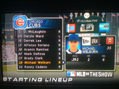

Call up to 'The Show'
Posted March 18 2008 1:11AM by Michael
 I've been getting a lot of complaints about lack of updates, so I thought I'd throw an update out there for those longing to hear what I do all day. Today was spent mostly moving a 19 year old virtual version of myself into the MLB from AAA. After destroying the competition in AA I got the call last night up to AAA, which I proceeded to also obliterate. Tonight, however, I was called up to the Cubs (which may or may not have been influenced by Ryan Theriot breaking his hand), where I proceeded to enter "Beast Mode" to the tune of a .400 AVG over my first 7 games (including no hits my first 2 games, as well as the game I just played). Because I know everyone not only follows my life, but also my virtual life. I realize these pictures aren't top quality, but even an iPhone isn't going be able to capture a TV picture very well. Note: Yes, I realize the image on the left does not have the exact stats I just applauded myself for achieving. Unfortunately, I was playing another game before I took this picture, and evidently I lowered my AVG ever so slightly
I've been getting a lot of complaints about lack of updates, so I thought I'd throw an update out there for those longing to hear what I do all day. Today was spent mostly moving a 19 year old virtual version of myself into the MLB from AAA. After destroying the competition in AA I got the call last night up to AAA, which I proceeded to also obliterate. Tonight, however, I was called up to the Cubs (which may or may not have been influenced by Ryan Theriot breaking his hand), where I proceeded to enter "Beast Mode" to the tune of a .400 AVG over my first 7 games (including no hits my first 2 games, as well as the game I just played). Because I know everyone not only follows my life, but also my virtual life. I realize these pictures aren't top quality, but even an iPhone isn't going be able to capture a TV picture very well. Note: Yes, I realize the image on the left does not have the exact stats I just applauded myself for achieving. Unfortunately, I was playing another game before I took this picture, and evidently I lowered my AVG ever so slightly
On another note, for some reason the game decides that when you choose your favorite number in the world for your jersey number, it will do its best to get you that number (or the closest number to it incrementing upwards until a number is available for that team). And when you get called up, they do it again. Unfortunately, the programmers seem to have based each subsequent jersey number reassigning based upon your previous jersey number, not your desired number. Hence the reason I'm wearing 35 instead of 26 (after dabbling with numbers such as 29 and 31 in the minors). Maybe I am the only person annoyed by this, but I don't see many second basemen wearing 35 (at least any good ones).
In terms of the site, I see a large portion of my loyal followers have been using the comment feature to give me ideas to implement on the site, or what to fix. The couple hours I spent on it today was to fix a couple smaller bugs, though one larger problem remains. I would disclose what it is, but it would probably be exploited hundreds of times before I woke up in the morning.
Later on this week I will divulge all of my NCAA bracket predictions (which are based on my not at all extensive knowledge of college basketball this year), and even later (think multiple weeks later) I will detail my fantasy baseball rosters (if only so I can reference them later in the year to see what kind of pitiful players I drafted).
And so ends the longest blog post in the history of Welburn's...